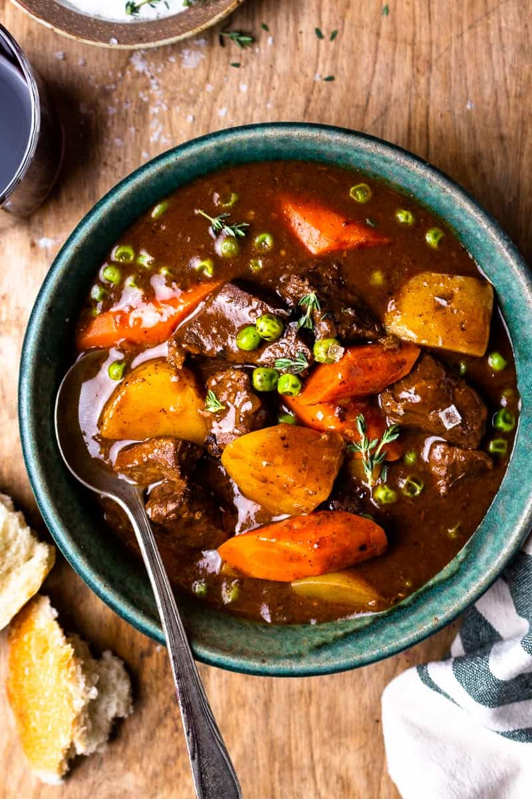

Viking Stew

A hearty stew made with winter staples, just like móðir used to make.
- 1 pound venison, cubed
- 2 onions, chopped
- 3 carrots, chopped
- 2 parsnips, chopped
- 2 turnips, chopped
- 4 cups broth
- 2 tablespoons butter
- 1 teaspoon salt
- 1 teaspoon pepper
- 1 teaspoon thyme, dried
- 1 teaspoon sage, dried
- 1 teaspoon rosemary, dried
- In a large pot, melt the butter over medium heat. Add the onions and cook until softened.
- Add the meat and cook until browned on all sides.
- Stir in the root vegetables, salt, pepper, thyme, sage, and rosemary.
- Pour in the broth, bring to a boil, and then reduce the heat. Simmer for 1-2 hours, or until the meat is tender and the vegetables are cooked through.
- Serve hot with a side of rustic bread.